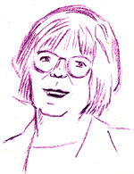

This is an archived copy of History Matters, provided by the Roy Rosenzweig Center for History and New Media. To explore this content in a new interface, visit Who Built America?.


Doris M. Meadows graduated from Montclair State Teachers College where she began her career as a student teacher in American History. She was awarded a three-year NDEA fellowship in Social Studies at NYU. Subsequently, she taught African American History at a Community College. For more than a decade she worked in libraries and archives on both coasts and did volunteer teaching, including co-teaching a special seminar on Women’s History at Stanford University. In 1984, she completed her PhD with a dissertation entitled Creed of Caste: Journalism and the Race Question in the Progressive Era, 1900–1914 and began teaching Social Studies in the City School District in Rochester, New York. In 1986 she transferred to Wilson Magnet High School, where she taught A.P. American History, Regents, and Honors U. S. History and Government courses as well as a series of Humanities courses for 16 years. She has also taught African American and American history at Monroe Community College. She is currently substitute teaching in the Rochester School District and writing a book. Doris M. Meadows was the 2001 recipient of the Organization of American Historian’s Mary K. Bonsteel Tauchau Pre-Collegiate Teaching Award.1. What drew you to history teaching? Were you, for example, drawn by the subject matter, by particular teachers, or something else?
I was drawn to history long before I thought about history teaching. All four of my grandparents were first generation immigrants and were great sources of stories rooted in their various family histories. Inevitably some of their most vivid accounts had strong historical contexts. For example, I often visited my great aunt next door who loved to discuss the history and politics of the British Isles and was particularly fond of stories about her life in the 1920’s. She modeled the process of relating personal experience to political circumstances, economic realities, and public events.
At some point family story telling and traditions became connected to the places and times of my own life and history. We lived in a very multi-ethnic area near the city line of Newark and Bloomfield, New Jersey where there were factories, parks, institutions, and businesses. These places became historical sites of exploration with my siblings and cousins. I was drawn to family and local history.
In retrospect, I realize that the turning point that led to my life as a teacher was my experience in high school. I was in the second graduating class of East Orange Catholic High School, which opened in response to a need for affordable education for girls. The standards were high and the rules were strict, but there was also a strong sense of a caring community.
Most of the teachers were deeply engaged in their disciplines and were models of intellectual life. Many families, including my own, were delighted with the scholarship aid and pleased with the values of the school, but not necessarily committed to the challenging academic curriculum. They felt that it was as hard as the boys programs and that it did not encourage us to pursue the kinds of jobs and lives typical of our families. They were right. I can still remember the joy and excitement of my classes and the conflicts that occurred when students fought with their families about staying in a college prep rather than a secretarial curriculum. The school encouraged us to use all of our intellectual, spiritual, artistic, and physical gifts, giving rise to expectations and ambitions that were not common in our communities. Moreover, we saw a model of a spiritual and intellectual community of women who taught with joy and excitement and deeply cared about their subjects and their students.
I chose to go to Montclair State Teachers College because I could work through school and because of its fine reputation in education. Under the tutelage of Dr. Robert Beckwith, I became interested in American social and cultural history. Dr. Beckwith encouraged my efforts and suggested that I apply to graduate school. Miraculously, I was awarded an NDEA fellowship and went to live and study in Greenwich Village, where I solidified the connection between academics and activism that has dominated my teaching career.
2. When did you start teaching? Where have you taught? Which courses have you taught?
I was assigned to teach American History in a junior high school in Montclair, New Jersey, where the first court-ordered busing program had just begun. My assigned school, which had been predominantly African American, was now integrated by busing white students from the affluent areas of Upper Montclair. The integration was limited by tracking. I was assigned Sections 1, 2, 6, and 10. Section 1 was all white, while section 6 was predominantly African American. The experience raised my awareness of the ways in which African American students were underserved.
My African American co-operating teacher, Mr. White, was an extraordinary mentor. He welcomed my efforts to use inductive methods and encouraged me to take risks. One of my projects involved a Revolutionary War field trip to New Jersey historical sites where we were greeted by an early October snowstorm.
After I completed my three-year fellowship at NYU, I taught African American history part-time at a community college. Unfortunately, the department was not very diverse and informed me that there would never be a regular position for a woman in their department. I accepted a dissertation fellowship, which I was allowed to work on at Stanford University, where I also did some volunteer teaching in women’s history including an undergraduate special seminar in 1972.
I worked in libraries and archives for a number of years and finally returned to teaching after I completed my dissertation. I accepted a temporary position to teach AP American history and social studies with the City School District in Rochester, New York. I enjoyed the work and transferred to Wilson Magnet High School in the district. It was an exciting time of anticipated reform, and Wilson was in the neighborhood where I lived. I was the unofficial historian of the neighborhood community association and had deep ties to the area. At Wilson, I taught AP American History, Regents, and honors U.S. history and government courses as well as a series of humanities courses for 16 years. I also completed a temporary position at Monroe Community College, where I taught African American history I and II and American history since 1865.
Over the past decade, I have especially enjoyed courses teaching teachers. I have done a wide variety of visiting lectures and workshops. At the City School District, I offered a course on Teaching Women’s History using a grant from the Woodrow Wilson Foundation.
3. Which are your favorite courses to teach? Why?
I especially enjoy teaching college level African American history courses, because most students do not have knowledge of that aspect of American history. Both the African American history and the humanities courses allowed me to engage my students in the topics and disciplines associated with cultural history.
I always find the AP U.S. history course to be a formidable but enjoyable challenge. I like the survey aspect of it and enjoy searching for new ways to engage students. Since this course is often the last course in history for many students, I make special efforts to be sure that we spend time on the discipline of history and its distinctive approaches and tools of analysis.
4. What are the biggest themes that you try to convey? What are your most effective assignments?
Many texts and mandated curricula detail chronological events dominated by a specific theme like economic depression or imperialism. I prefer to choose a larger more transcendent theme each year such as “The Quest For Freedom” or “The Search For Social Justice.” Throughout the year I incorporate documents, activities, and current events to highlight the theme.
I begin each class with an initial biographical assignment in which students must select and analyze three critical influences on their own lives. In a separate assignment they must interview an adult over 40 and discover the two most critical influences on his or her life. Students quickly come to some understandings of point of view, frame of reference, and the concept of generations. Throughout the course, I try to use assignments and projects that engage them in the processes of history. High school students are especially fond of participatory activities like trials, political campaigns, summit meetings, newspapers, magazines, and conventions. In their final course evaluations, students often mention specific projects and the roles they played.
In all my courses, students have key opportunities to give their own feedback in the course and to select topics and activities within the parameters of the mandated curriculum. This strategy is part of the foundation of values and respect in my classroom with an emphasis on a climate of caring. Although I set very high standards, I focus on helping students meet the standards rather than on the standards themselves.
Multiculturalism has become a key factor in the educational landscape. I paid careful attention to cultural history and its implication to the national narrative. For example, in teaching about the Progressive Era, I included lessons, which assessed the situations of African Americans, women, and immigrants in relation to the efforts of reform. By understanding that the “Progressive Era” was a nadir for African Americans, students begin to look more critically at the construction of historical periods.
Multicultural literacy requires familiarity with the lives and contributions of Americans whose gender, ethnicity, and/or class have relegated them to the margins. In my courses, I use biographical projects including book reports, focused bibliographical essays and short research exercises to enrich the political and economic areas. For example, in the study of pre-Civil War reform, students have a reform convention based on research about individuals and their causes (e.g. Frederick Douglass and abolitionism).
Many public schools require the use of a selected textbook, which “covers” the material tested on the year-end exam. In my classes, such texts are used for context, but primary sources, especially documents, are the basis for many lessons. Maps, pictures, slides, short excerpts of documentaries, literature, court cases, and music are routinely used to enable students to get a vivid view of other times. The Gilded Age becomes memorable with a video tour of several lavish “summer cottages” in Newport, Rhode Island, where guests received party favors of precious jewels even as deep depression left thousands of children homeless and starving.
Although most of my students have exhibited some level of motivation, many have trouble settling down to get started in class. I often use “quick starts” to get them engaged. It may be a cartoon, a song, a slide, a quote, several quiz questions on a previous day’s topic, a news article, a film clip, or a quote that relates to the work in progress. These strategies are key to my classroom organization and discipline. Student-centered learning is the focus. “Lecturing” is minimal and usually done with slides. The most common activity is structured discussion. On a regular basis, students take turns participating in debates, panels, role-playing, press conferences, and mock trials. For example, students participate in a trial of the owners of the Triangle Shirtwaist Factory Building where garment workers lost their lives in a fire. In AP U.S. History, students grapple with constitutional issues of presidential power in an impeachment trial of Andrew Jackson.
5. What are your most important goals in teaching the survey course? What do you most want students to take away from a US survey course with you?
I want my students to understand the nature of history and the importance of historical analysis. Students should learn that history is not merely a collection of facts. They will obtain knowledge of the framework of American history and many of the people who made it. Through their work they will have an understanding of how historians work, the variety of histories produced and how these stories are socially and culturally situated. Through ongoing interpretative activities that integrate the analysis of current events with history, students prepare themselves for intelligent citizenship. In the process of the discovery of other lives in other times and circumstances, students encounter the motivations and values of others, even as they decide where they stand or wish to stand.
I view my teaching career as a work in progress. As a teacher I feel that it is my duty not only to engage students, but to inspire them. While I have developed and accumulated my fair share of “tricks of the trade,” I believe that inspiration depends on substantial mastery and immersion in the content of the course. Only then can teachers guide students to a deeper level of understanding and critical analysis of the subject.
6. What is your most memorable teaching experience?
Over the years I have had many, many memorable students and classes. I regularly meet former students who regale me about a particular class or something I said or did that really stuck with them. I especially enjoyed my classes at Wilson and the challenges of creating “best lessons” for each group. In my opinion, the best thing and the worst thing about teaching is that you never get it perfectly right. There is always space to get better. I feel fortunate that I have found work I love. The challenges of history education keep me engaged and inspired.
Interview conducted by Kelly Schrum; completed in June 2004.